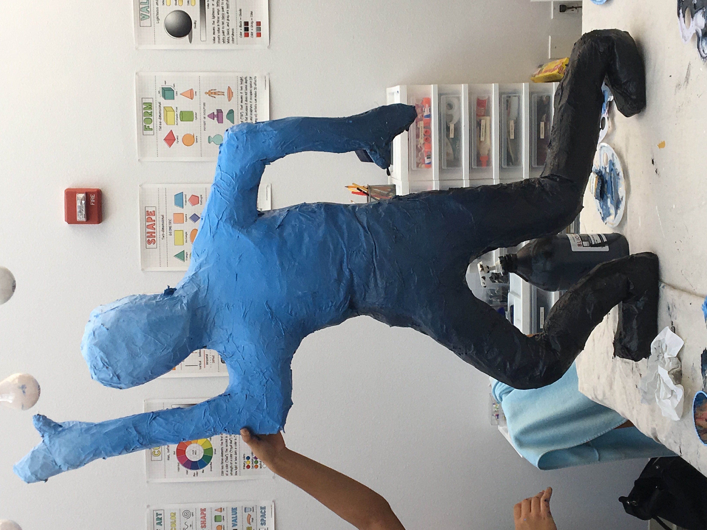

Child At Play Sculpture

Mediums: Saran Wrap, Tape, Mod Podge, Water, Paper Towel, Newspaper, Glue, Paint
This was a group project which we worked on throughout the cycle. It started as just a plan on a piece of paper, which displayed a child in an apparent state of play. The final result was more like a corpse, but it was still a good effort. We modeled multiple people's body parts in the process, so that the group element would increase even more. We started by first creating and combining body parts with saran wrap and filling them with newspaper. We then combined mod podge, a glue-like substance, as well as some water, used it as papier-mâché to coat the sculpture, and finalized it with a layer of glue and several different colors. The process can be seen throughout the above images. The result is the final image.